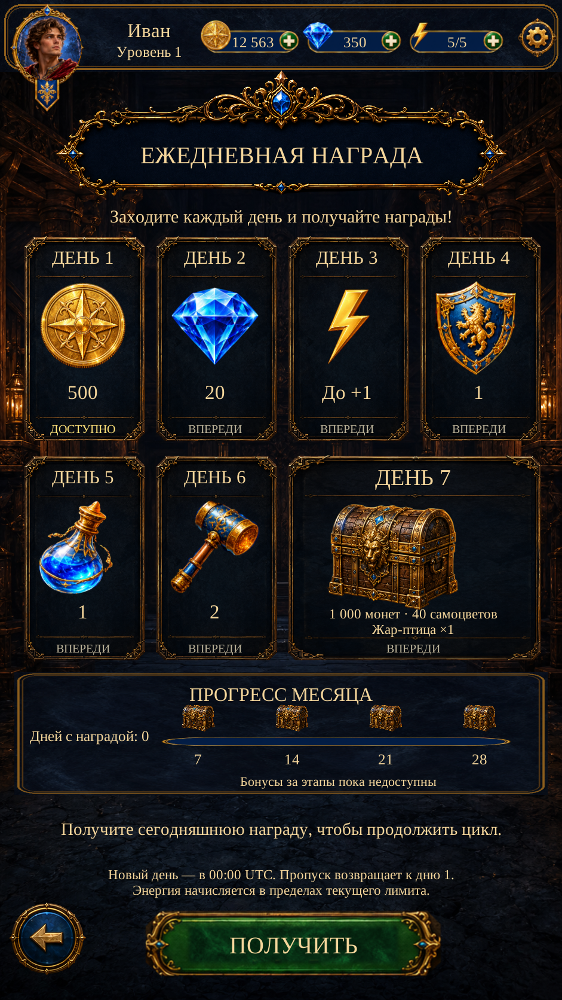

Visual Page 14 · Daily Reward R2
Actual Unity Play Mode captures. R2 replaces the incorrectly reused rectangular Back tab with the reference’s circular gold-arrow icon. Original RGB retained, fresh Scenario alpha, original button and route preserved.
Scenario R2: one successful isolation job, 3 CU. The icon is shown at its original reference size and position. Existing daily rewards and all other page art remain unchanged.

Unity · Russian · 941×1672Implementation and exact checks · Reference differences · Changed files